vignettes/data_age_inc.Rmd
data_age_inc.RmdThis report aims to:
Data: prev_inc_griffin2014
The data come from an analysis by Griffin et al. (2014) describing age-specific patterns of disease at different transmission intensities. This analysis collates data from 14 studies containing prevalence and incidence estimates, as well as entomological inoculation rates (EIRs) from 23 distinct sites. The majority of the studies repoeted incidence data over a whole number of years, but where they did not, the authors adjusted the time at risk based on the length of the malaria season as reported in each publication. The studies that recorded cases using active case detection (ACD) were categorized into daily or weekly ACD, and the rest of the studies cases were recorded via passive case detection (PCD), i.e. on presentation at the health facility.
Below we can take a look at the variables included in the dataset:
head(prev_inc_griffin2014)## country reference site_name site_index age0 age1
## 1 Senegal Diallo_etal_1998 Senegal_Diallo_Dakar_south 36 0 2
## 2 Senegal Diallo_etal_1998 Senegal_Diallo_Dakar_south 36 2 10
## 3 Senegal Diallo_etal_1998 Senegal_Diallo_Dakar_south 36 10 15
## 4 Senegal Diallo_etal_1998 Senegal_Diallo_Dakar_south 36 15 20
## 5 Senegal Diallo_etal_1998 Senegal_Diallo_Dakar_south 36 20 100
## 6 Senegal Diallo_etal_1998 Senegal_Diallo_Dakar_south 18 0 1
## type numer denom case_detection meanEIR sd_hi sd_low
## 1 prevalence 1 908 weekly ACD 0.05000001 0.1112771 0.02246645
## 2 prevalence 22 6245 weekly ACD 0.05000001 0.1112771 0.02246645
## 3 prevalence 4 3256 weekly ACD 0.05000001 0.1112771 0.02246645
## 4 prevalence 19 2869 weekly ACD 0.05000001 0.1112771 0.02246645
## 5 prevalence 14 6097 weekly ACD 0.05000001 0.1112771 0.02246645
## 6 incidence 0 21 weekly ACD 0.05000001 0.1112771 0.02246645
## alpha(prop treated) beta(prop treated) plot_index plot_title
## 1 4.6875 20.3125 1 Senegal, South Dakar
## 2 4.6875 20.3125 1 Senegal, South Dakar
## 3 4.6875 20.3125 1 Senegal, South Dakar
## 4 4.6875 20.3125 1 Senegal, South Dakar
## 5 4.6875 20.3125 1 Senegal, South Dakar
## 6 4.6875 20.3125 1 Senegal, South DakarThe authors explored incidence by age in each site. They found that
there is a pronounced peak in young children in some of the high
transmission sites. In lower transmission sites the distribution of
cases widens to include older ages. The magnitude and location of this
peak does however vary across sites. The figure below plots incidence in
<20 year olds across the different sites, with the panels ordered by
increasing transmission intensity/EIR. Confidence intervals are
calculated here using the CI_inc() function (from SIMPLEGEN
package).
prev_inc_griffin2014 %>%
filter(type == "incidence") %>%
mutate(age_mid = (age1 + age0) / 2,
incidence = numer / denom) %>%
do(cbind(., CI_inc(.$numer, .$denom))) %>%
filter(age_mid < 20) %>%
ggplot(aes(x = age_mid, y = incidence, group = case_detection, color = case_detection)) +
geom_point() +
geom_errorbar(aes(ymin = lower, ymax = upper)) +
labs(x = "Age (in years)",
y = "Incidence (clinical episodes per person per year") +
facet_wrap(~reorder(plot_title, meanEIR), scales = "free_y") +
expand_limits(x = 0, y = 0) +
theme_minimal()